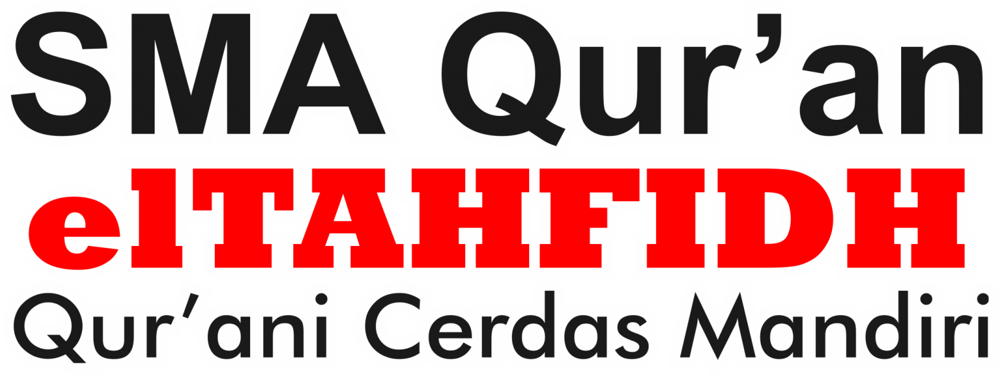
SMA Qur'an Ikhwan Boarding
Asrama putra di kompleks Islamic Boarding School elTAHFIDH, Cileungsi.
Pilihan Kampus

Asrama putra di kompleks Islamic Boarding School elTAHFIDH, Cileungsi.
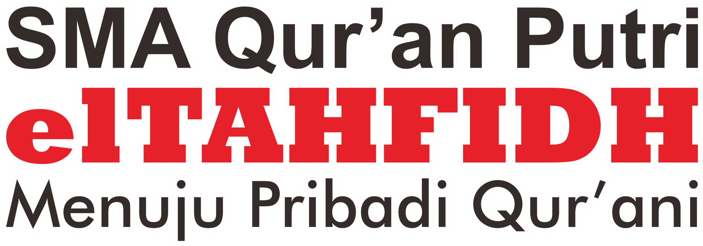
Asrama putri di bawah Pesantren Qur'an Akhwat elTAHFIDH.
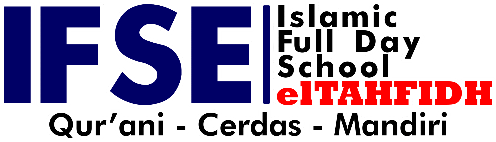
Tanpa asrama, melalui Islamic Full Day School elTAHFIDH.
SelengkapnyaProgram
Al-Qur'an, akademik, dan pembentukan karakter berjalan bersama.
Program Unggulan

Dengan standar bacaan yang diakui, santri siap menjadi rujukan tajwid di masyarakat.
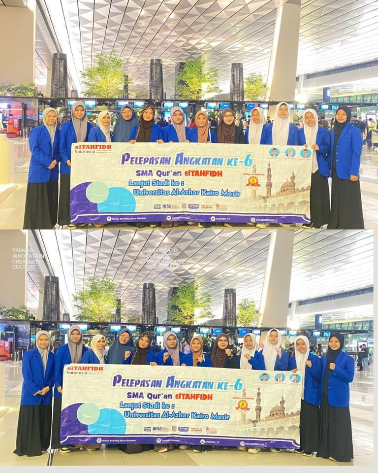
Santri dapat melanjutkan ke jenjang kuliah, baik di dalam maupun di luar negeri.
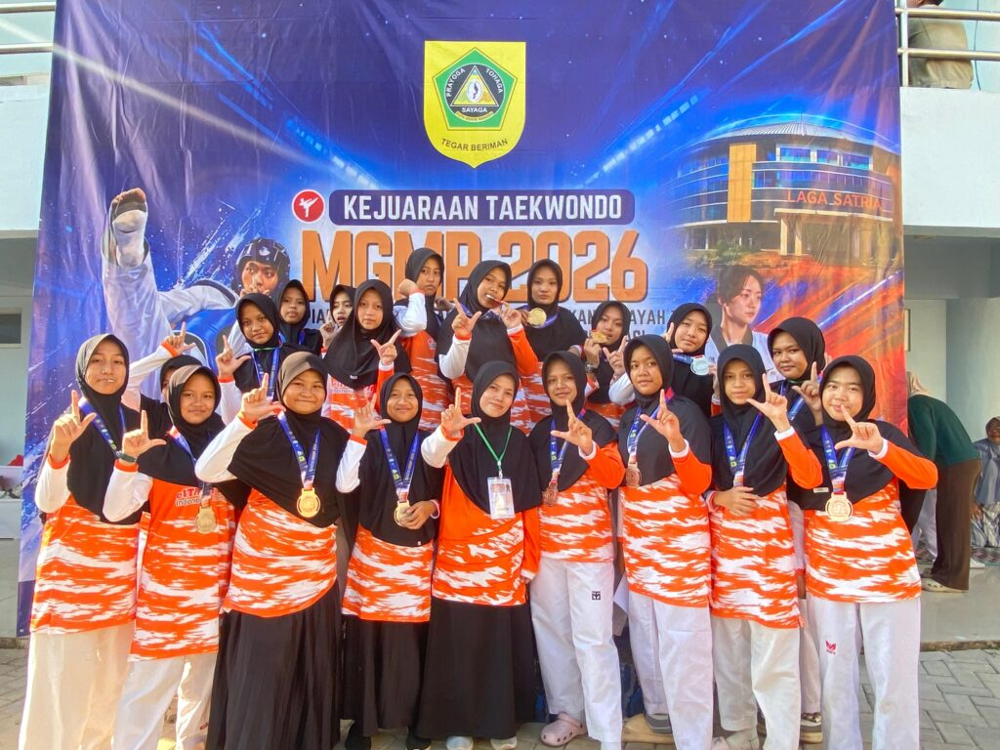
Terkoneksi dengan Taekwondo dunia di Korea Selatan.
Pimpinan
Sesuai struktur organisasi resmi elTAHFIDH Indonesia.
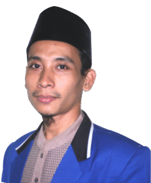
SMAQ elTAHFIDH
Direktur
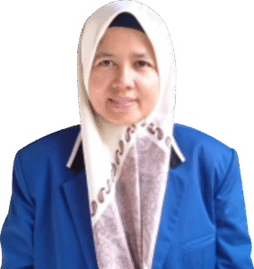
Pesantren Qur'an Akhwat
Direktur
Berita
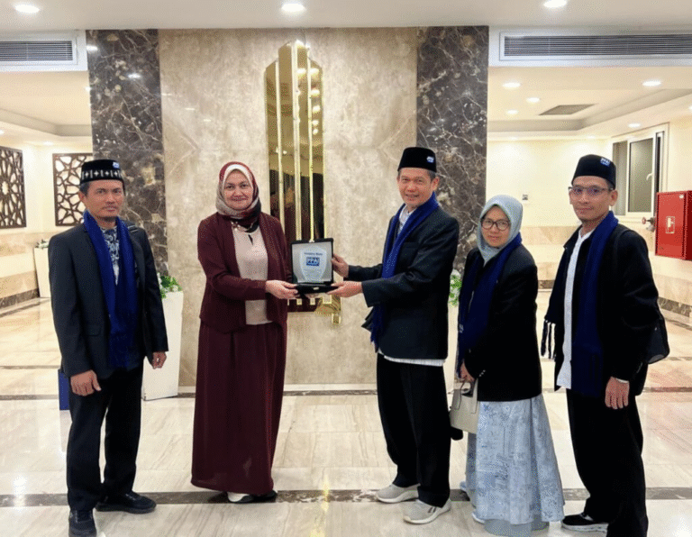
Kairo, Mesir — Dalam rangka memperkuat kerja sama pendidikan internasional, elTAHFIDH Indonesia menggelar silaturahmi strategis dengan pihak Al-Azhar…
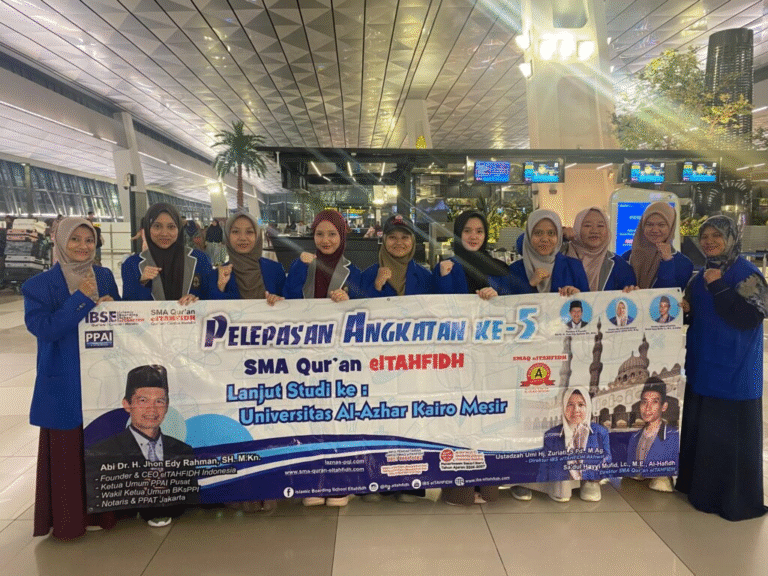
Tangerang, 26 September 2025 – Suasana penuh haru dan khidmat menyelimuti area Bandar Udara Internasional Soekarno Hatta pada Jumat pagi.
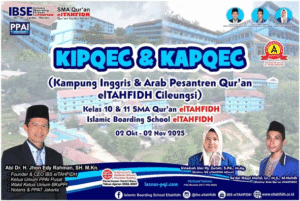
Cileungsi, 03 Oktober 2025 — Alhamdulillah, sebuah langkah besar kembali dihadirkan oleh SMA Qur’an elTAHFIDHBoarding SMA Quran Cileungsi melalui…
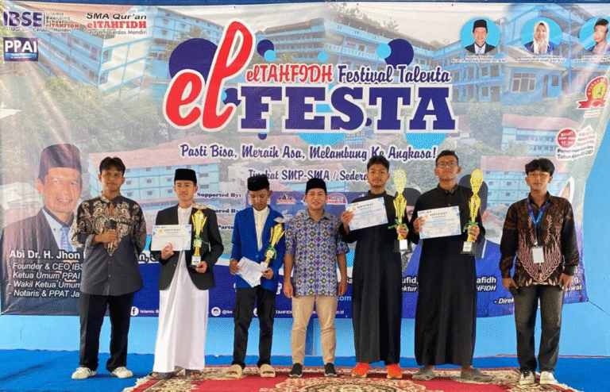
Cileungsi, 01 Oktober 2025 — Alhamdulillah, kegiatan elFESTA 25 resmi terlaksana dengan penuh semangat di lingkungan Islamic Boarding School elTAHFIDH
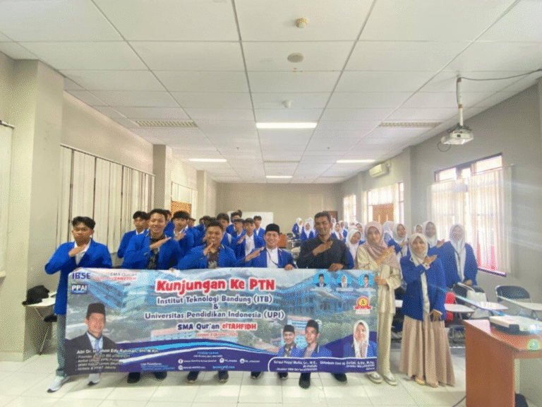
Bandung, 8 Oktober 2025 —SMA Qur’an elTAHFIDH kelas 12 Ikhwan dan Akhwat melakukan perjalanan menuju Bandung dalam agenda Kunjungan Perguruan Tinggi…
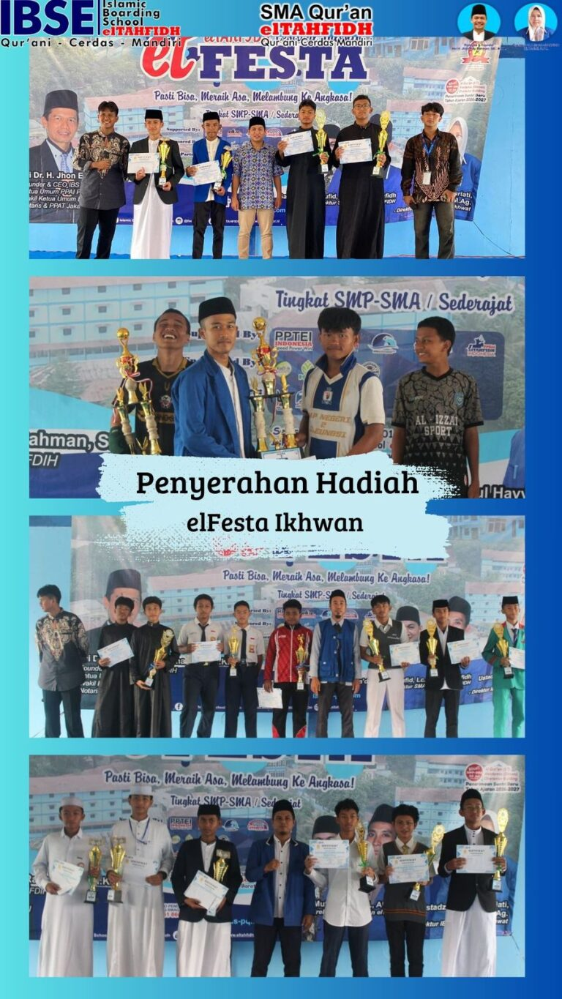
elfesta 2025 Gaet 305 Organisasi Siswa dalam Dua Hari Penuh Kompetisi Semangat kompetisi dan kreativitas pelajar dari seluruh penjuru Banten, Jawa…
Daftarkan Ananda di SMA Qur'an elTAHFIDH atau tanyakan informasi penerimaan murid baru melalui WhatsApp.